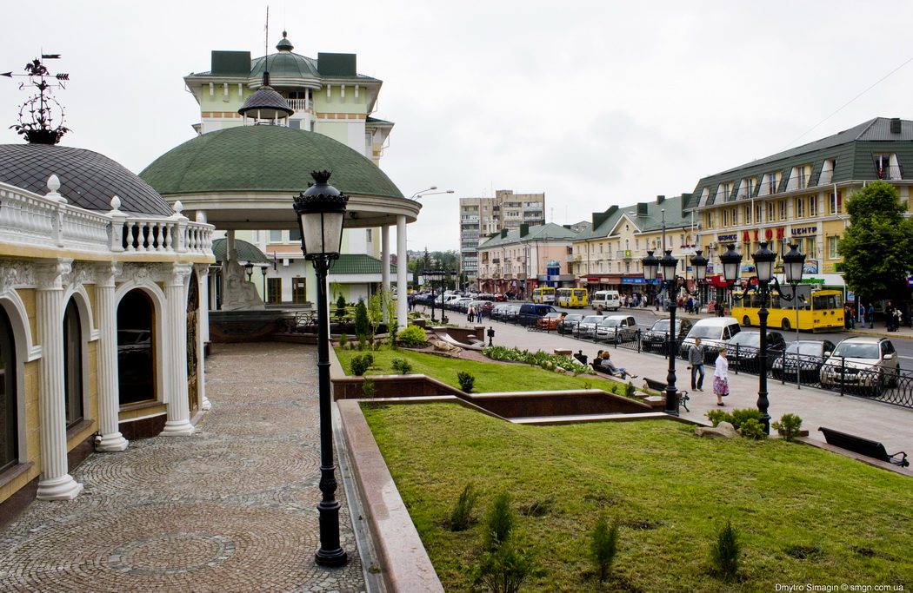
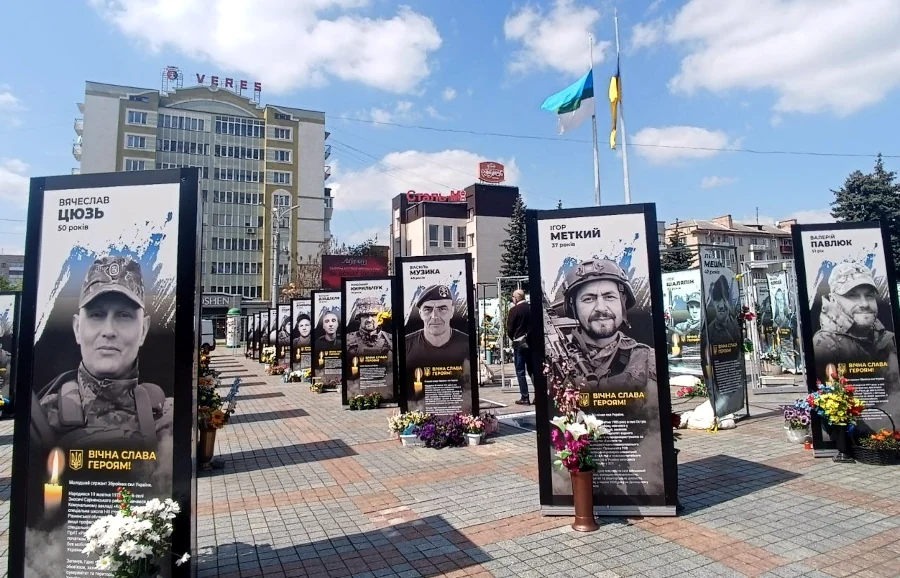

Рідне місце поета - Рівне
-
Рівне — місто в Україні, обласний центр Рівненської області. Одне з найстаріших міст України, яке має багату історію та культурну спадщину, відоме з 1283 року. Перша письмова згадка про Рівне у статусі міста — 1496 рік, у Волинському короткому літописі. Рівне тричі за свою історію існування ставало столицею. Вперше це сталось на початку минулого століття, коли Директорія Української Народної Республіки на чолі з Симоном Петлюрою була змушена залишити Київ. Тоді столицю перенесли до Рівного. У ті ж буремні роки Рівне оголошують столицею вдруге. Бунтівний отаман Оскілко проголошує місто столицею України. Але, як і першого разу, - ненадовго. Утретє місто стає столицею під час фашистської окупації. У 1941 році на окупованій німцями території створюється рейхскомісаріат «Україна» зі столицею у Рівному. Сьогодні Рівне – обласний центр, який зручно розташувався на березі річки Устя. На перший погляд, це не дуже велике місто, де проживає близько 250 тисяч жителів. Але насправді, це колоритне, цікаве і незвичне місто, яке подарує багато емоцій, зачарує з першого разу і розкривається для кожного туриста по-своєму.
- 
- 
У війні Рівне втратило багато захисників: відбиваючи Київ від ворога, загинув боєць з Рівного Тарас Козлишин в бою під Васильковим на Київщині загинув рівненський активіст Ярослав Гранітний в ході ведення бойових дій на Бахмутському напрямку загинув Дмитро Опольський під час виконання бойового завдання на Донеччині загинув Сергій Ульмер виконуючи бойове завдання у Курській області загинув Олександр Савін в ході ведення бойових дій на Авдіївському напрямку загинув Євген Христич на Бахмутському напрямі загинув Василь Бенедюк при виконанні бойового завдання на Запоріжжі загинув Максим Чудінович під час виконання бойового завдання у Курській області загинув Руслан Денищич виконуючи бойове завдання у Курській області загинув Юрій Прокопчук виконуючи бойове завдання на Донецькому напрямку загинув Геннадій Кривко виконуючи бойове завдання на Запоріжжі загинув Денис Бабак під час наступально-штурмових дій на Донеччині загинув Геннадій Гануш виконуючи бойове завдання на Херсонщині загинув Максим Васусь... Офіційних цифр загиблих на війні немає. Однак відомо, що всім загиблим воїнам з Рівного вручають відзнаку «Почесний громадянин міста»